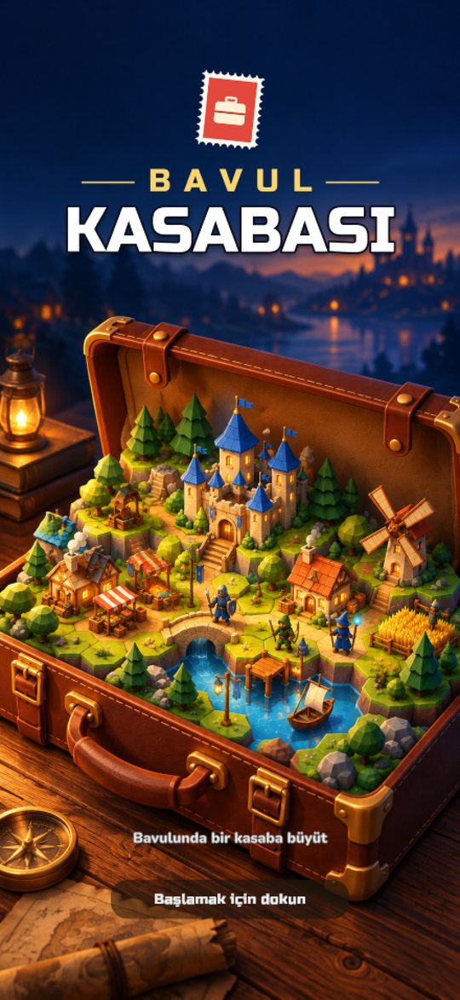
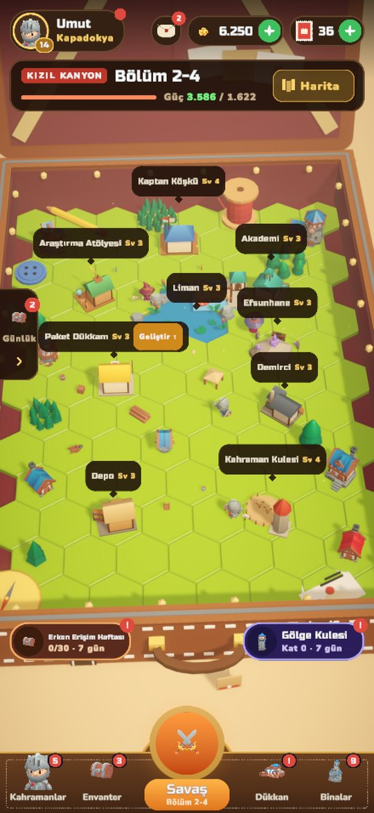
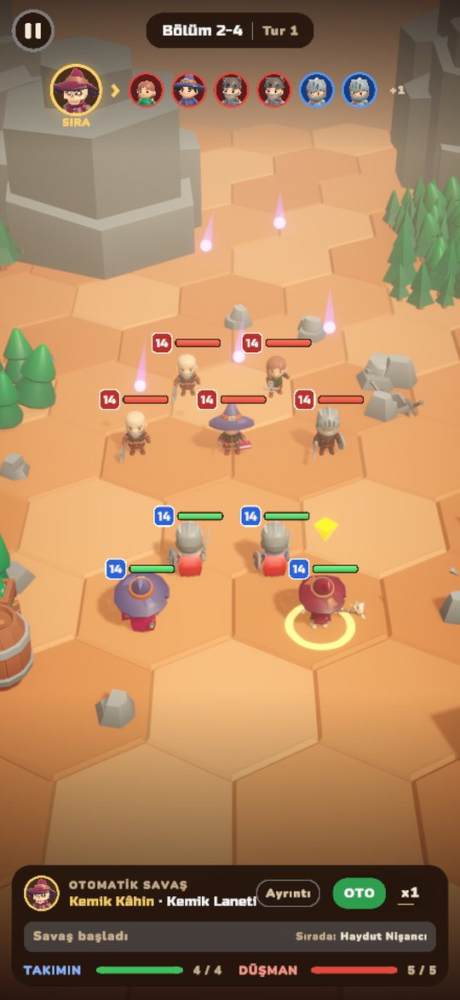
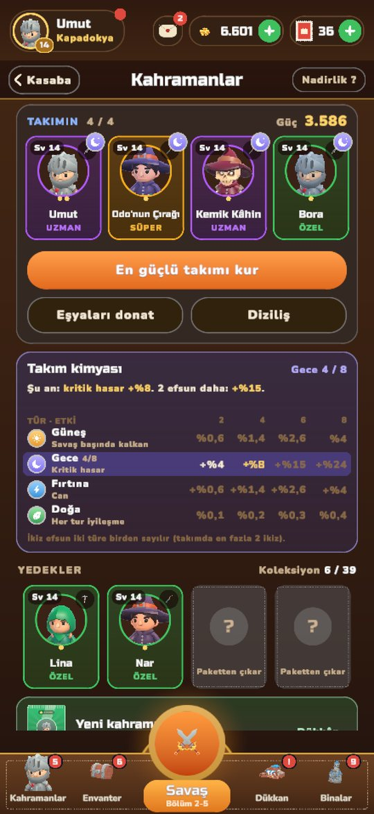
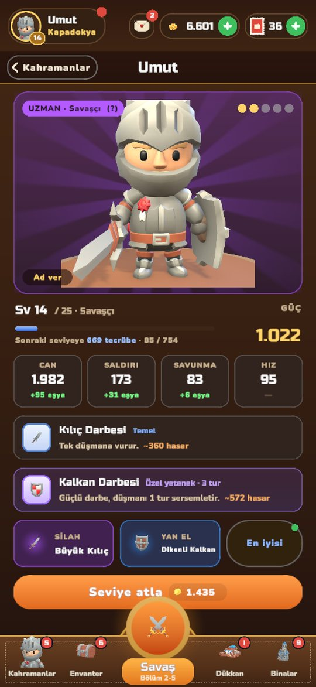

Bölüm 1–10
Bölüm 1–10 Bölüm 11–20
Bölüm 11–20 Bölüm 21–30
Bölüm 21–30 Bölüm 31–40
Bölüm 31–40 Bölüm 41–50
Bölüm 41–50 Bölüm 51–60
Bölüm 51–60
YENİ: 2. SEZON · iPhone
Bavulunda bir kasaba büyüt, kahramanlarını topla, dünyayı bavul bavul kurtar!
Gezgin mucit Odo'nun tüm diyarları bavullara saklanmıştı… ta ki Gölge İmparatoru gelene dek. Şimdi elinde tek bir eski deri bavul var. Ve yanında sen.
SÜRÜM 1.0 · ÇOK YAKINDA
Gölge İmparatoru yenildi; ama o yalnızca bir kuklaydı. Gökyüzü yırtıldı ve Odo'nun kayıp bavulları karanlığa bürünmüş hâlde ortaya çıktı. Köşk artık bir gemi; yola çıkıyoruz!

Her bavul ayrı bir bölge, ayrı bir düşman ordusu ve ayrı bir boss demek.
1. Sezon · Gölge İmparatoru
Bölüm 1–10Bölüm 11–20Bölüm 21–30Bölüm 31–40Bölüm 41–50Bölüm 51–602. Sezon · Karanlık Bavullar
 Bölüm 61–70
Bölüm 61–70 Bölüm 71–80
Bölüm 71–80 Bölüm 81–90
Bölüm 81–90 Bölüm 91–100
Bölüm 91–100 Bölüm 101–110
Bölüm 101–110 Bölüm 111–120
Bölüm 111–120Oyunun güncel sürümünden. Okları kullan ya da parmağınla kaydır.







Metroda kısa bir oturum için de, uzun soluklu bir macera için de.
Kaptan Köşkü, Demirci, Akademi, Efsunhane, Liman… Her bina yeni bir özellik ve kalıcı bir takım bonusu açar.
Normal'den Efsanevi'ye altı nadirlik. Nadir kahramanların imza yetenekleri 5 yıldızda uyanır ve güçlenir.
Diziliş, sınıf üstünlüğü ve doğru hedef. 2. sezonda her bavulun kendi kuralı var; her boss'un da kendine has bir hilesi.
Eşyalarına Güneş, Gece, Fırtına ya da Doğa efsunu bas. Aynı efsunu taşıyan takım birlikte güçlenir.
Her hafta sıfırlanan 50 katlı kule. Game Center sıralamalarında kaptan seviyeni, takım gücünü ve kuleni karşılaştır.
Etkinliklerde yalnızca orada verilen kahramanları kazan; kurtardığın bavulların boss'larını her hafta yenip pul topla.

Peri bacalarından Karanlık Atölye'ye: her durakta seni bir boss bekliyor.
1. Sezon


2. Sezon · Karanlık Bavullar


Bir sorun mu yaşadın, bir fikrin mi var? Bize yaz: bavulkasabasi@gmail.com. Oyunun sürümünü (Ayarlar → Hakkında) ve telefon modelini eklersen daha hızlı yardımcı olabiliriz.
Telefonunda iCloud açıksa oyun kaydın kendi iCloud hesabına yedeklenir. Oyunu aynı Apple kimliğiyle açtığında "Kaydın Bulundu" penceresi çıkar ve kaldığın yerden devam edersin. Ayarlar ekranının altında yedeğin açık olup olmadığı yazar.
Geçtiğin bölümleri tekrar oyna, kahramanlarına seviye atlat, eşyalarını güçlendir ve dizilişi ayarla (büyücü ve okçu arkaya). Akademi, Atölye, Sefer ve etkinlikler de altın kazandırır. Ana ekrandaki "Sıradaki" şeridi ne yapman gerektiğini söyler.
Nadirlik: 1 elmas Normal, 6 elmas Efsanevi. Kahraman detayında nadirlik etiketine dokunarak Nadirlik Rehberi'ni açabilirsin.
1. sezonun son boss'u Gölge İmparatoru'nu (60. bölüm) yen; hikâye seni köşk gemisine taşır. Daha önce Sonsuz Yol'da ilerlediysen güncellemeyle 2. sezonun başına geçersin, kat ettiğin yol pulla ödenir. Geçtiğin bavullara Odo'nun Haritası'ndan her zaman dönebilirsin.
Ayarlar → Hesabı ve verileri sil. Telefondaki kaydın, iCloud yedeğin, anonim oyuncu kimliğin ve kullanım verilerin silinir. Ayrıntılar: Gizlilik Politikası.